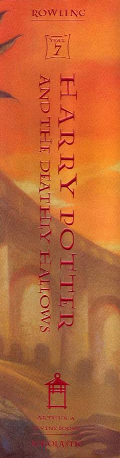

HPGarri Potter va uning do'stlarining Voldemortga qarshi so'nggi hal qiluvchi jangi.
Garri Potter seriyasining yettinchi va yakuniy qismi bo'lib, unda Garri, Ron va Germiona Lord Voldemortning o'lmasligini ta'minlovchi xorkrukslarni yo'q qilish uchun xavfli safarga otlanishadi. Qahramonlar sehrgarlar dunyosini qutqarish uchun so'nggi va hal qiluvchi jangda yuzma-yuz kelishadi.